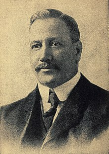

El voleibol, vóleibol, volibol, vólibol, balonvolea o simplemente vóley es un deporte que se juega con una pelota y en el que dos equipos, integrados por seis jugadores cada uno, se enfrentan sobre un área de juego separada por una red central.
El voleibol fue creado el 9 de febrero de 1895 por William George Morgan, entrenador deportivo de la Asociación Cristiana de Jóvenes (YMCA) en Holyoke. Morgan había realizado sus estudios en el Colegio de Springfield de la YMCA donde conoció a James Naismith quien, en 1891, había inventado el juego del baloncesto. El voleibol fue ideado en principio como una alternativa más sosegada al baloncesto, pues aunque este se adaptaba bien a los jóvenes, los miembros de mayor edad requerían un juego menos intenso. Inicialmente lo denominó Mintonette. Por tanto el baloncesto y el voleibol se inventaron al final del siglo xix en dos ciudades, Holyoke y Springfield, separadas por solo 16 km y ambos deportes surgieron en la Asociación Cristiana de Jóvenes (YMCA) difundiéndose rápidamente a nivel internacional por todas sus organizaciones asociadas
A comienzos del 1900 Canadá fue el primer país extranjero que adoptó el juego como deporte para ser practicado en diversas instituciones. Pronto lo siguieron Japón (1908) y Filipinas (1910), donde fue incluido en el programa de los primeros Juegos del Lejano Oriente, en 1913. Así comenzó su expansión a nivel mundial